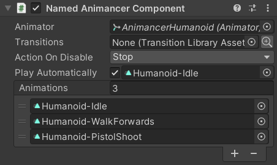

Location: Samples/02 Fine Control/02 Named Animations
Recommended After: Basic Character
Learning Outcomes: in this sample you will learn:
How to use a
NamedAnimancerComponent.How to play animations by name.
Summary
This sample demonstrates the same behaviour as Basic Character except that its script refers to the animations by name instead of referencing them directly.
- You can register an animation with a Key and later refer to it using that Key.
- An
AnimancerComponentuses anAnimationClipas the Key of its state. - A
NamedAnimancerComponentinstead uses thenameof theAnimationClipas the state's Key so you can play it usinganimancer.TryPlay("Clip Name"). - That only applies when playing an
AnimationClipdirectly though. Playing a Transition will use itself as the state's Key regardless of which component type you're using.
Overview
The BasicCharacterAnimationsNamed script contains all the sample code and is very similar to BasicCharacterAnimations from the Basic Character sample:
using Animancer;
using UnityEngine;
public class BasicCharacterAnimationsNamed : MonoBehaviour
{
private const string Idle = "Humanoid-Idle";
[SerializeField] private NamedAnimancerComponent _Animancer;
[SerializeField] private string _Move;
[SerializeField] private string _Action;
private State _CurrentState;
private enum State
{
NotActing,// Idle and Move can be interrupted.
Acting,// Action can only be interrupted by itself.
}
protected virtual void Update()
{
switch (_CurrentState)
{
case State.NotActing:
UpdateMovement();
UpdateAction();
break;
case State.Acting:
UpdateAction();
break;
}
}
private void UpdateMovement()
{
_CurrentState = State.NotActing;
float forward = SampleInput.WASD.y;
if (forward > 0)
{
_Animancer.TryPlay(_Move, 0.25f);
}
else
{
_Animancer.TryPlay(Idle, 0.25f);
}
}
private void UpdateAction()
{
if (SampleInput.LeftMouseUp)
{
_CurrentState = State.Acting;
AnimancerState state = _Animancer.TryPlay(_Action, 0.25f, FadeMode.FromStart);
state.Events(this).OnEnd ??= UpdateMovement;
}
}
}
The code structure is a bit different from the other samples because the animations are referenced by the NamedAnimancerComponent while the controlling script only has their names and depends on those names being correct for it to work:

Recommendations
This sample demonstrates what can be done with Animancer, but using string names as Keys to identify animations is not the recommended way of using Animancer for most situations. The following table summarises the main advantages and disadvantages of using names compared to using AnimationClips or Transitions directly.
| Advantages of names | Disadvantages of names |
|---|---|
|
|
Animancer Component
The first difference between this sample and Basic Character is that it uses a NamedAnimancerComponent instead of a base AnimancerComponent.
| Animancer Component | Named Animancer Component |
|---|---|
 |
 |
As you can see here, the Named script Inherits the same fields from the base class and adds a list of animations to register by name with a toggle to play the first one automatically on startup.
Since NamedAnimancerComponent Inherits from AnimancerComponent, that means this sample's BasicCharacterAnimationsNamed script could reference it using either type of field.
| Animancer Component | Named Animancer Component |
|---|---|
|
|
Can hold an AnimancerComponent. |
Can't hold an AnimancerComponent. |
Can hold an NamedAnimancerComponent. |
Can hold an NamedAnimancerComponent. |
In this sample, we don't need to use any of the extra features of NamedAnimancerComponent in our script so either one would work fine, but we are relying on the fact that it will register animations by name so it is better to prevent a base AnimancerComponent from being assigned. The Component Types page explains the differences between them in more detail.
Animation Names
Since the NamedAnimancerComponent has all the necessary animations, our BasicCharacterAnimationsNamed script only needs to know their names.
| Code | Inspector |
|---|---|
|
 |
It demonstrates two simple ways of storing strings:
- For Idle it uses a constant, meaning the value is hard coded in the script so it won't work with any other animation name.
- For Move and Action it uses Serialized Fields, meaning they need to be given a value in the Inspector so the script is more flexible but takes a bit more effort to use.
Playing
The Basic Character sample used Transitions which encapsulate what to play along with the desired fade duration and other details so playing them looked like this:
// BasicCharacterAnimations.cs.
_Animancer.Play(_Move);
But since our script only has the animation names, we need to use TryPlay and specify the fade duration as well:
// BasicCharacterAnimationsNamed.cs.
_Animancer.TryPlay(_Move, 0.25f);
- It's called
TryPlaybecause we don't know if it will actually work from here. Passing a validAnimationClipor Transition intoPlaywill create the necessary state if it didn't already exist, but passing a validstringintoTryPlaywon't be able to do anything if the state didn't already exist. - We could have also used Serialized Fields for the fade durations, but that's adding more complexity which would be better handled by Transition Libraries.
Action
The other main difference from the Basic Character sample is the way we need to play the Action.
Instead of a allowing us to set its End Event on startup:
// BasicCharacterAnimations.cs.
[SerializeField] private ClipTransition _Action;
protected virtual void Awake()
{
_Action.Events.OnEnd = UpdateMovement;
}
private void UpdateAction()
{
...
_Animancer.Play(_Action);
}
This time we need to specify the Fade Mode and set the End Event after playing it.
// BasicCharacterAnimationsNamed.cs.
[SerializeField] private string _Action;
private void UpdateAction()
{
...
AnimancerState state = _Animancer.TryPlay(_Action, 0.25f, FadeMode.FromStart);
state.Events(this).OnEnd ??= UpdateMovement;
}
The End Events page explains that syntax in detail.
Conclusion
Using named animations for something this simple is obviously silly, but there are some cases where it can be useful.